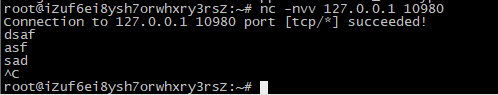

tcpdump
tcpdump - dump traffic on a network
2
3
4
5
6
7
8
9
10
11
12
13
[ -c count ] [ --count ] [ -C file_size ]
[ -E spi@ipaddr algo:secret,... ]
[ -F file ] [ -G rotate_seconds ] [ -i interface ]
[ --immediate-mode ] [ -j tstamp_type ] [ -m module ]
[ -M secret ] [ --number ] [ --print ] [ -Q in|out|inout ]
[ -r file ] [ -s snaplen ] [ -T type ] [ --version ]
[ -V file ] [ -w file ] [ -W filecount ] [ -y datalinktype ]
[ -z postrotate-command ] [ -Z user ]
[ --time-stamp-precision=tstamp_precision ]
[ --micro ] [ --nano ]
[ expression ]
参数

-a 将网络地址转变为名字 ，如127.0.0.1 => localhost
-A 把监听到的数据包以ACSII形式打印出来 如上图打印出了HTTP报头
-n 将网络地址域名转换为IP地址，如 localhost => 127.0.01,与-a相对
-i 指定tcpdump监听的网卡，如上图监听了eth0
-w 后跟文件名，将监听到的数据包写入到指定文件中
-r 与-w参数相对于，读取指定文件的数据包
-D 显示所有网卡(接口)
-q 简化输出抓包消息,如下图，不加-q输出在控制台的消息较为完整，加上-q则只输出使用的协议，返回的报文长度
-p 无混合模式,将网卡设置为非混杂模式，不能与host或broadcast一起使用
makes sure you only get packets that are to or from your comput
-h –help打印tcpdump使用到的各种参数。如上图一
-e 打印诸如以太网和IEEE 802.11之类协议的MAC层地址，如下图
-c 后跟数字，打印、监控指定数量的包，达到数量后退出监控.如下图，-c 10，打印十条记录后tcpdump关闭运行
-v 输出详细信息,包括ttl和服务类型的信息,如下图
-vv 输出详细的报文信息,如下图
BPF filters
tcpdump uses a small language called BPF to let you filter packet
可以用and或or连接多条语句
1 | tcpdump -i eth0 -n host www.baidu.com |
BPF filters可以用’’包括也可以不用，为了方便与tcpdump参数区分，建议使用’’
src源地址
dst目标地址
ip icmp arp rarp 和 tcp、udp、icmp过滤数据报的类型
host包含src与dst
port过滤端口
逻辑运算符：&& == and，|| == or ，! == not
icmptype：表示icmp报文中类弄字节的偏移量
icmpcode:表示icmp报文中编码字节的偏移量
tcpflags:表示TCP报文中标志位字节的偏移量
proto[x:y] : 过滤从x 字节开始的y 字节数。比如ip[2:2]过滤出3、4 字节（第一
字节从0 开始排）
proto[x:y] & z = 0 : proto[x:y]和z 的与操作为0
proto[x:y] & z !=0 : proto[x:y]和z 的与操作不为0
proto[x:y] & z = z : proto[x:y]和z 的与操作为z
proto[x:y] = z : proto[x:y]等于z
netcat
Netcat is a featured networking utility which reads and writes data across network connections, using the TCP/IP protocol.
It is designed to be a reliable “back-end” tool that can be used directly or easily driven by other programs and scripts. At the same time, it is a feature-rich network debugging and exploration tool, since it can create almost any kind of connection you would need and has several interesting built-in capabilities.
It provides access to the following main features:
Outbound and inbound connections, TCP or UDP, to or from any ports.
Featured tunneling mode which allows also special tunneling such as UDP to TCP, with the possibility of specifying all network parameters (source port/interface, listening port/interface, and the remote host allowed to connect to the tunnel.
Built-in port-scanning capabilities, with randomizer.
Advanced usage options, such as buffered send-mode (one line every N seconds), and hexdump (to stderr or to a specified file) of trasmitted and received data.
Optional RFC854 telnet codes parser and responder.
Netcat是一款非常出名的网络工具，简称“NC”,有渗透测试中的“瑞士军刀”之称。它可以用作端口监听、端口扫描、远程文件传输、还可以实现远程shell等功能。总之功能强大，可以用一句较为风趣的话来描述NC的强大——“你的想象力是局限NC的瓶颈”。
参数
-h help,帮助
-p 设置本地主机使用的通信端口
-l listen监听模式
-w 设置等待时间，超时秒数
-z 使用0输入/输出模式，旨在扫描通信端口时使用
-v 显示指令执行过程
-u 使用UDP协议
-s <来源位址> 设置本地主机送出数据包的IP地址
-l 使用监听模式，管控传入的资料
-n 直接使用IP地址，而不通过域名服务器
连接到远程主机
1 | nc -nvv ip port |

监听本地主机
1 | nc -l -p port |
1 | nc -l -p port > file |
端口扫描
1 | nc -v ip port |
1 | nc -v -z ip port_start-port_end |
连接远程系统
1 | nc ip port |
FTP匿名探索
1 | nc ip 21 |
文件传输
传输端
1 | nc ip port < file |
接收端
1 | nc -l port > file |